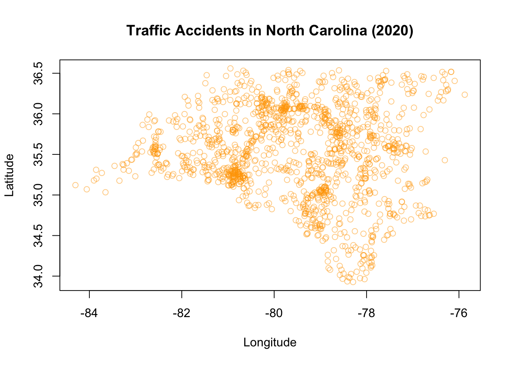
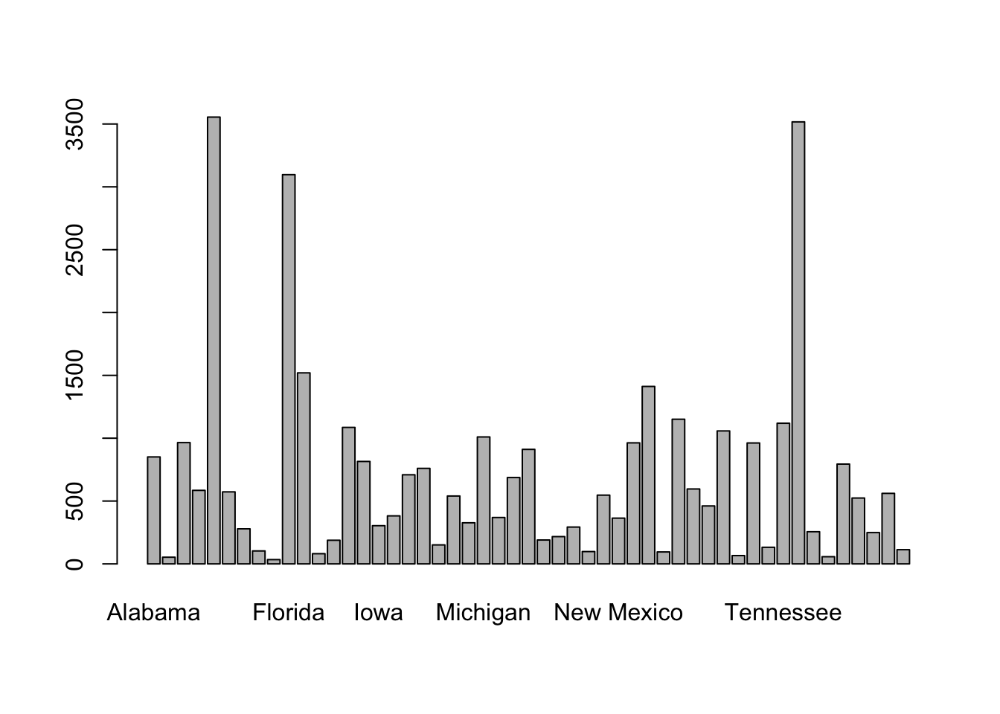

|
|
7 Project Part 4.2: Visualizations & Trends in R
Now that we’ve explored data visualizations in Python, we can learn how to create dynamic data visuals in R, as well, including a few additional multivariate representations.
7.1 Base R plot features
Base R has a plot function, which for standard plots is very easy to use. To illustrate the utility of the base R plot function in connection with the communicative power of data visualizations, let’s look at an example after a brief presentation of some background information.
7.1.1 Traffic Accidents - Example
The traffic accidents data set contains data compiled from the National Highway Traffic Safety Administration for incidents occurring in 2020. Variables range from vehicle information to characteristics of the drivers & passengers. The data, by itself, is a collection of various values and other bits of information. We could summarize this content with statistics, such as means and frequencies. However, we could consider another way to get a global summary of the data through creating a simple visualization. In particular, when data is related to location, and this information is available in the dataset, there is an opportunity to gain insights into data characteristics by way of a spatial representations.
Below, we will leverage the location information in the data in conjunction with the base R plot() function to demonstrate the power of data visualization and the ease of creating these in R. Furthermore, we’ll consider some avenues of additional inquiry inspired by the visualizations of the data.
One variable in the Traffic Accidents data, STATENAME, contains information on the state in which a particular accident occurred. Because the data may have multiple rows representing different people associated with a particular accident we need to use the ST_CASE variable - a unique identifier for each accident - to filter the data to one observation per accident. This will allow us to get the frequencies of accidents while avoiding over-counting accidents with multiple entries in the dataset. The table below represents accurate counts of accidents per state, based on the data, obtained through the filtering described here in addition to other data moves.
Notice that both Alaska and Hawaii are included in the states for which accidents were recorded. Now, let’s take a look at how we can create a visual of this table using the base R plot() function.
# the base R plot function takes simple
# (x,y) coordinates to generate a plot
plot(Accidents$LONGITUDE, Accidents$LATITUDE)
By simply adding two numeric variables into the plot function we were able to create a relatively informative visual of the data. For example, we could look at this graph and use our prior knowledge of maps and geography to infer that the data represent events that occurred in the United States. Knowing the context of the graph, we could also say that car accidents occur in almost all parts of the U.S. In general, with location data we may be able to relate to the context through examining our hometown or current location (e.g., North Carolina) if, or when, represented.
On the other hand, there is so much room for improvement. For this, we can even implement many graphical enhancements with the basic plot function through adding additional parameters and by also considering our visualization guidelines from the previous chapter.
# plot with labels, color, and transparency
plot(Accidents$LONGITUDE, Accidents$LATITUDE,
main = "Traffic Accidents", # main title
xlab = "Longitude", # x-axis label
ylab = "Latitude", # y-axis label
col = alpha("orange",0.25), # specifies a color and transparency value
pch = 1) # pch = 1 makes open circles In the visualization above, we have gotten rid of the unnecessary clutter on our axis labels, added an informative title, and also added transparency to our (now orange) data points. The transparency also revels more information about the density of the accidents with respect to latitude and longitude.
In our guidelines, we also talked about how graph scales are important. Although the graph scales can be customized, the default scale ranges in R for numeric data depend on the ranges of the data points themselves. These ranges can have major influences on the usefulness and accuracy of a graphical representation. This influence is sometimes discovered or encountered in situations where there are one or more outliers in the data. For example, if most data is within a range of 1 to 10, and one data point is at 200, the corresponding visual will not display any variation in the majority of what could be your highly variable data. In this case, the differences between data points in the 1 and 10 region would not be distinguishable on a scale that ranges up to 200.
As with the hypothetical example above, although the traffic accidents data does not have what we would necessarily classify as outliers, including the accidents in Hawaii and Alaska impacts the graph in a similar, but less extreme, way. For an analysis including all states, we may have a need to display all of the related data. But let’s see how things change if we restrict the data to the continental U.S.
With the graph rescaled to only include data from the continental U.S., we can now more readily visually discern accidents density variation across the (continental) U.S. As noted in the code comments, we specified the graphing coordinates criteria using the model formula operator ~ to generate the graph… because we can (and because there are so many ways to do a thing in R!).
Finally, let’s create one last graph to Zoom in a bit on the home state of this book, North Carolina.
# NC subset
Accidents_NC <-
Accidents %>%
filter(STATENAME == "North Carolina")
# NC graph, accidents locations
plot(LATITUDE ~ LONGITUDE, data = Accidents_NC,
main = "Traffic Accidents in North Carolina (2020)",
xlab = "Longitude",
ylab = "Latitude",
col = alpha("orange",0.5),
pch = 1) 
Pretty cool, right! In general, in base R:
- The default graph generated for two numeric variables from a dataset is a scatterplot.
As seen above, scatterplots can be particularly informative when they’re related to location information and prior knowledge, but definitely have more general utility for various appropriate data types.
Now, what about categorical variables in base R?
# one variable, categorical
plot(Accidents$STATENAME) # barchart
Using the base R plot() function, the default graph for one categorical variable is a barchart. And now, we enhance.
plot(Accidents$STATENAME,
col = "purple", # fill bar colors w purple
border = "orange", # Color bar borders orange
las = 2, # Rotate x-axis labels vertically
cex.names = 0.5, # Shrink x-axis labels
main = "Traffic Accidents by State",
xlab = "State")
# Adjust y-axis label to be horizontal
mtext("Number of Accidents", side = 2, line = 3, las = 0)Based on the graphical representation, we might infer that the number of accidents in states are correlated with the respective state populations, or number of drivers within a state. Although that may be an obvious starting point, we might want to see if the proportion of drivers in each state is significantly different from the proportions of drivers, perhaps with a plan to investigate why potential differences may exist.
For two categorical variables as inputs into the base R plot function, the graph that is generated is what is known as a mosaic plot. Although this can be generated in the same way as previous examples, through the base R plot() function, we will use more useful packages to create such a visual where we can more easily modify the labels and colors to create an informative display.
7.2 Other common plots
In R, boxplots and histograms are just as easy to implement. Let’s look at the syntax for these visuals through a few examples.
boxplot(Marine6$Depth) # distribution of depthWe could also create multiple boxplots for comparison by using model syntax with one numeric and one categorical variable (e.g., to compare distributions of depth by region).
boxplot(Depth~Region, data=Marine6,
col = "purple", # fill bar colors w purple
border = "orange", # Color bar borders orange
main = "Depth by Region",
cex.axis = 0.45, #shrink axis labels
xlab = " ",
ylab = " ",
las = 2 # Rotate x-axis labels vertically
)
mtext("Depth (feet)", side = 2, line = 3, las = 0)From this plot, we might want to investigate the factors that contribute to the visually evident differences in depth across the region.
Finally, to generate a histogram we can use the function hist() in the code below.
hist(Marine6$Depth)As with the other plot functions in base R, we could modify the histogram to include more bins, various colors, labels, and other features. However, when we’re interested in customizing visualizations in R, the package to turn to is ggplot2!
7.3 ggplot2!
One of the best data visualization packages in R, and in general, is ggplot2 from the tidyverse. The ggplot2 syntax allows for building a variety of standard and customized graphs through layers. Similarly to features available in base R, the methods for visualizations built through ggplot2 include aesthetics such as groups, colors, opacity, size and more - with the bonus of minimal code and access to excellent documentation. As with other libraries within the tidyverse, ggplot2 has a very useful resource that can be found here: ggplot2 Cheat Sheet.
With the ggplot2 package, we will expand our visualizations to show examples of useful multivariate graphs, including mosaic plots and spaghetti plots.
7.3.1 Examples with ggplot2
The Rising Global Temperature dataset consists of three variables, gistemp, year, and ci95.
gistemprepresents yearly-average temperature differences from the average of 1986 - 2005, for each year including and between 1880 to 2018.
For example, a gistemp measurement of 0.2 for a given year would represent a yearly average temperature of 0.2 degrees Celsius warmer than the average temperatures from 1986 - 2005.
yearrepresents the year in which the temperatures were taken, andci95represents the 95% confidence interval margins of error.
Below, we’ll use the ggplot2 package to visualize the temperature changes over time.
# RGT is the Rising Global Temperature dataset
# the aes() function indicates the variables to be plotted w.r.t. the axes
# geom_point() adds the points layer to the visual
# geom_line() adds the line layer to the visual
# theme_minimal is an option that minimizes background items, such as grid lines
# NOTE, each layer is added/connected to the next through the `+` operator
RGT %>%
ggplot(aes(x = year, y = gistemp)) +
geom_point() +
geom_line() +
theme_minimal()
From this plot, we can discern a generally increasing trend in the temperature differences over time. Patterns revealed here may not be so obvious in numerical summaries alone, especially in terms of concisely communicating or presenting the trend to a general audience. Considering communication efficacy, we may see some opportunities to add some customization to our graph to enhance the quality and consider additional information in the dataset. For example, we could visualize the confidence interval information that accompanies each year measured, make our axis labels more informative and add color. We do this in the following visual.
# The alpha parameter adjust the opacity of the corresponding geom
# We can improve our various labels through the labs() function
longtemp %>%
ggplot(aes(x = year, y = temperature_difference, color = category)) +
geom_point(alpha = 0.5) +
geom_line() +
labs(x = "Year",
y = "Temperature Difference",
color = "Category",
title = "Rising Global Temperature",) +
theme_minimal() +
theme(legend.position = "top")
Note that we referenced a dataset called longtemp in the last code block. This dataset was derived from RGT via a series of data moves that included creating new variables and creating hierarchy through nesting upper bounds, lower bounds, averages, and the corresponding category information within each year (although explicitly repeated in the dataset).
Here is an example of the new data structure needed for the graph.
# A tibble: 6 × 3
year category temperature_difference
<dbl> <chr> <dbl>
1 1880 average -0.607
2 1880 upper -0.468
3 1880 lower -0.746
4 1881 average -0.518
5 1881 upper -0.383
6 1881 lower -0.652The graph corresponding to longtemp is also an example of a spaghetti plot, which is an extension of a line plot to include group (or category) information. These graphs are often used to depict longitudinal data but can be useful for conveying many group-based patterns.
Next, we make a few adjustments to present the trends in the Rising Global Temperatures data with a little less clutter (by removing the points), and with an additional line at our comparison average (where the temperature change is zero).
longtemp %>%
ggplot(aes(x = year, y = temperature_difference,
color = category)) +
#geom_point(alpha = 0.5) + (commented out, easy...)
geom_line() +
labs(x = "Year",
y = "Temperature Difference",
color = "Category",
title = "Rising Global Temperature",) +
theme_minimal() +
theme(legend.position = "top") +
geom_hline(yintercept = 0, linetype = "dashed", color="purple", alpha = .6)As you can see by comparing the code blocks, modifying visualizations through ggplot is quite convenient. In particular, we can overlay additional features by simply adding the relevant geom to the visualization.
Design Practices
When you create data visualizations, there are many choices that can be made. Considerations for user experience, for example, can help to guide your choices. These may include choosing accessible color palettes and adding descriptive text for a given visualization.
Compare the code and corresponding images from the visuals above and below. How do you imagine the two different graphs might impact perception?
longtemp %>%
ggplot(aes(x = year, y = temperature_difference,
color = category, linetype = category)) +
#geom_point(alpha = 0.5) + (commented out, easy...)
geom_line() +
labs(x = "Year",
y = "Temperature Difference",
color = "Category",
linetype = "Category",
title = "Rising Global Temperature",) +
theme_minimal() +
theme(legend.position = "top",
legend.title = element_blank()) +
geom_hline(yintercept = 0, linetype = "dashed", color="purple", alpha = .6)
7.3.2 Faceting
As an alternative to plotting multiple groups on one graph, we may want to compare groups on the same scale on different graphs within the same visualization. We have a convenient way to do this through adding facet options. We can see an example of this using our familiar Marine6 dataset.
For the following visualization, we used data moves (e.g, filtering, grouping, creating new variables) on the Marine6 dataset to calculate the average depth of the marine species for each year, and created a new dataset called AvgDepth_Year, referenced below.
AvgDepth_Year %>%
ggplot(aes(x = Year, y = `Average Depth`,
group = `Marine Species`, color = `Marine Species`)) +
geom_point() +
geom_line() +
theme_classic() +
theme(axis.text.x = element_text(angle = 90, vjust = 0.5, hjust=1),
legend.position = "top") +
labs(title = "Average Depth Over Time", y = "Depth (feet)")Now, let’s employ the facet option to see what this can do.
AvgDepth_Year %>%
ggplot(aes(x = Year, y = `Average Depth`,
group = `Marine Species`, color = `Marine Species`)) +
geom_point() +
geom_line() +
facet_wrap(~ `Marine Species`) +
theme_classic() +
theme(axis.text.x = element_text(size = 4, angle = 90, vjust = 0.5, hjust=1),
legend.position = "top") +
labs(title = "Average Depth Over Time", y = "Depth (feet)")7.3.3 Categorical Example
Finally, let’s check out an example of a useful plot for two categorical variables, a mosaic plot. Mosaic plots can yield insights into patterns of association, bivariate frequencies and more. Although this can be done in base R, the ggmosaic package is designed for this purpose and uses the same useful structure as ggplot2.
In the visual below, we have created a dataset Mar6 from the Marine6 data via filtering and creating new variables. ggmosaic enters the ggplot syntax as a geom object with parameters as seen in the code below. Following the addition of the mosaic geom, we customized the graph features to capture the features of interest in a concise and quality way. You may even notice a potential association from examining the visual. Could this visual help you tell a data story?
library(ggmosaic)
# let's visualize a contingency table...
# NOTE, ggmosaic requires a base R data.frame() object until it is updated to accommodate tibbles.
Mar6 %>%
data.frame() %>%
ggplot() +
geom_mosaic(aes(x = product(Common.Name), fill = Depth_Range)) +
theme_mosaic() +
scale_fill_manual(values = c("#FFCA99","#1E8E99","#99F9FF","#CCFEFF"),
guide = guide_legend(reverse = TRUE)) +
labs(
x = " ",
y = " ",
title = "Is depth associated with marine species?",
fill = "Depth Range") +
theme(
axis.text.y = element_blank(),
axis.ticks.y = element_blank(),
axis.text.x = element_text(size = 7),
axis.title.y = element_text(size = 8),
legend.title = element_text(size = 8),
legend.text = element_text(size = 7),
plot.title = element_text(size = 10, hjust = 0.5)
)
Data Moves for Data Viz
Data moves often go hand in hand with preparing data for visualizations. In this chapter, each visualization was preceded by data processing steps so that the information we wished to display was available in the right format for the generating functions. Understanding your data and related data manipulation processes (e.g., data moves) are essential to creating informative data depictions. Here, once again, we see (and visualize) the interconnectedness of the data science workflow!